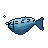
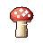
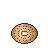
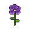

Five more tiles — across the mine, harbour and farm — reimagined as detailed 48×48 animations.
A companion to the grass and farm
concept pages. The game draws these tiles as static procedural icons (~74 px) that today only
get a subtle whole-sprite rotation sway in-game — the artwork itself never moves. This page gives
each a detailed, character-appropriate animation instead: the gem glints, the mackerel swims, the clam opens on its
hinge. Nothing here is wired into the engine — these are concepts only.
48×48animated GIF5 tilesmine · harbour · farmconcept only
01The five tiles
Each tile is shown large (≈4.3×) on a tile-stage backdrop like the one the game frames sprites against, with a
true 1× (48px) view beside it so you can judge how it reads at native size. The motion for each
is chosen to suit the object — a gem glints, a fish swims, a clam opens, a pansy breathes. Hover a palette chip
to see its hex.
Mine biome · gem
Gem
tile_mine_gem
Facets glint; the core pulses.
actual size — 48px
Palette · 7 colors
18 frames · 70 ms / frame · 1.26 s loop (seamless)
Today
A bright cyan faceted gem with an inner light — a mine drop.
Animation
An inner glow pulse, a glint that sweeps across the facets, a twinkling corner sparkle, and a faint magical hover.
Harbour biome · fish
Mackerel
tile_fish_mackerel
Swims with a tail flick.

actual size — 48px
Palette · 8 colors
18 frames · 70 ms / frame · 1.26 s loop (seamless)
Today
A deep-blue fish with tiger stripes, fins and a forked tail.
Animation
A swimming S-wave travels down the body (the tail sweeps most), the stripes shimmer, and bubbles rise from its mouth.
Farm biome · vegetable
Mushroom
tile_veg_mushroom
Spots glow; spores drift.

actual size — 48px
Palette · 9 colors
18 frames · 70 ms / frame · 1.26 s loop (seamless)
Today
A red toadstool with white spots and a pale stem.
Animation
A gentle bob while the white spots glow-pulse out of phase and faint spores drift down.
Harbour biome · shellfish
Clam
tile_fish_clam
Opens on its hinge; a pearl.

actual size — 48px
Palette · 8 colors
18 frames · 70 ms / frame · 1.26 s loop (seamless)
Today
A ridged tan bivalve shell.
Animation
The shell opens and closes on its hinge, revealing a pearly interior and a pearl that glints when open.
Farm biome · flower
Pansy
tile_flower_pansy
Petals breathe; it sways.

actual size — 48px
Palette · 9 colors
18 frames · 70 ms / frame · 1.26 s loop (seamless)
Today
A deep-purple pansy with a dark velvety centre and a yellow throat — a flower tile.
Animation
The petals 'breathe' (bloom in and out), the flower sways on its stem, the throat brightens, and a sparkle twinkles.
02Notes
A few things worth flagging before any of these is taken further.
Three biomes. These five span the mine (gem), the harbour (mackerel, clam) and the farm (mushroom, pansy). The concepts are 48×48, while the live game renders tiles at ~74 px — adopting one means either upscaling it nearest-neighbour (the crisp pixel look) or redrawing it larger.
Motion fits the object. The live game already applies a subtle whole-sprite rotation sway to every tile; these concepts animate the artwork itself, with the motion chosen to suit each object — a gem glints, a fish swims, a clam opens on its hinge.
Concept only. Nothing here is wired into the engine. This is a direction-finding exploration, not a drop-in asset set.
Reading the 1× view. Each card pairs the big sprite with a true 48px copy because that — not the hero — is roughly the size a tile occupies on the board. Motion that reads clearly at 1× (the gem's sweeping glint, the clam's hinge) is the kind worth keeping.